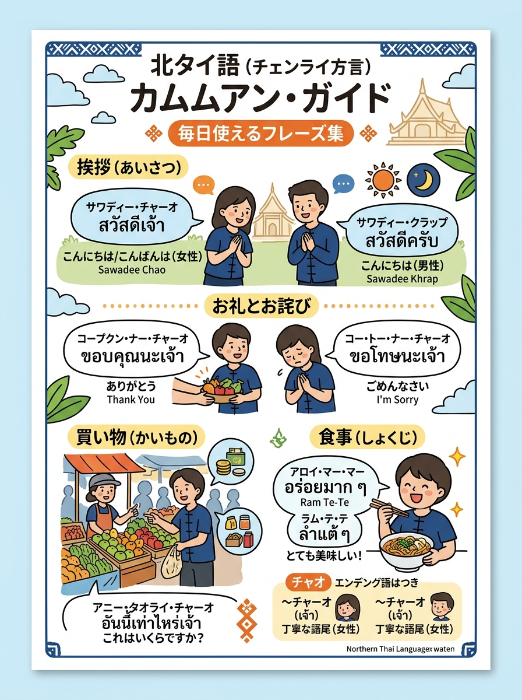
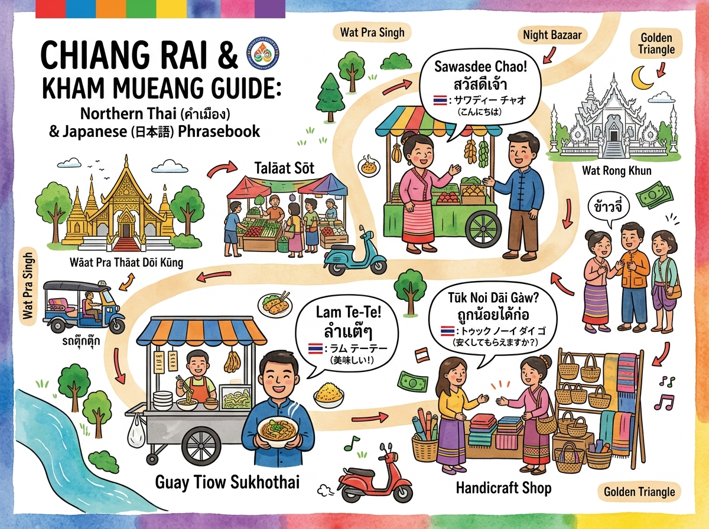

01
本当にありがとうございます
ขอบคุณมาก (khòop-khun mâak)
標準タイ語と少し異なる北タイ方言の挨拶、買い物、感謝の言葉（「インディー・チャード・ナー」等）。
クリックすると拡大して詳細を確認・印刷できます。

旅行者の持ち歩き・印刷に適した手書き風インフォグラフィック。

位置関係やルート、全体像を俯瞰できるワイドデザイン。
現地調査および公的データに基づく最新詳細情報。
ขอบคุณมาก (khòop-khun mâak)
อร่อยมาก (à-ròy mâak)
เท่าไหร่ (thâo-rày)
ลดอีกหน่อยได้ไหม (lót ìik nɔ̀y dâi-mǎi)
ไปไหนมา (pay nǎi maa)
มาก / จริงๆ (mâak / ciŋ-ciŋ)
ใช่แล้ว (chây lɛ́ɛw)
ขอโทษนะ (khɔ̌ɔ-thôot ná)